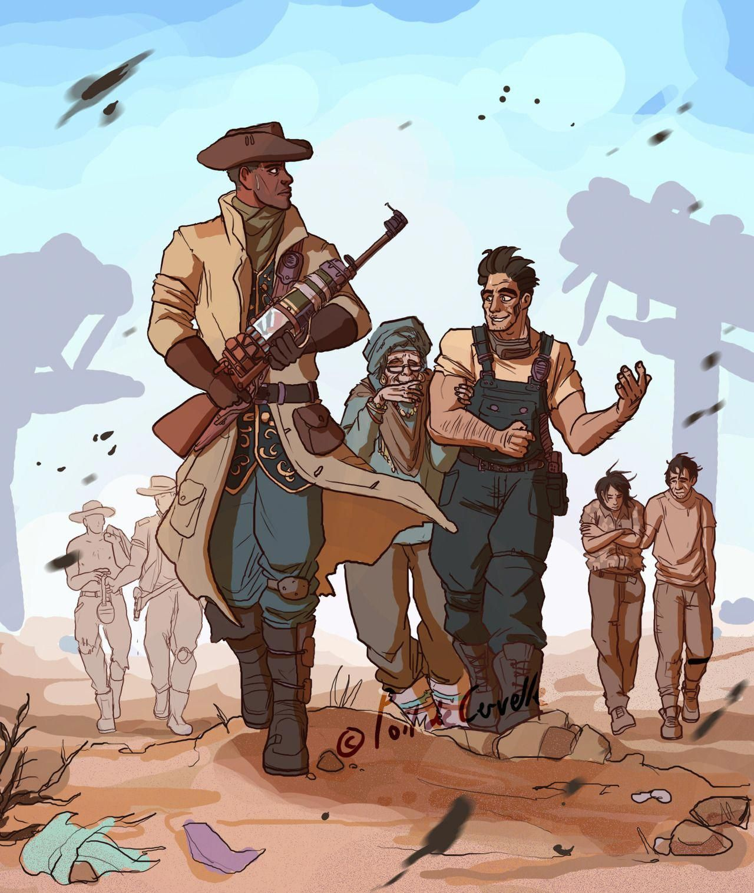

The Commonwealth Minutemen is an all-volunteer civilian militia formed as a
result of the efforts by various small communities to protect themselves against the numerous threats present within the Commonwealth. Inspired by the historical Minutemen of the American Revolution, settlers armed and trained themselves and pledged to help defend each other. As the organization expanded, acquiring dividends in both soldiers and resources, they first gained recognition after successfully defending Diamond City from a super mutant attack in 2180. The faction is based on the real world Minutemen, who were civilian colonists, independently organized and self-trained in weaponry, tactics, and military strategies from the American colonial partisan militia during the American Revolutionary War. They were known for being ready "at a minute's notice."